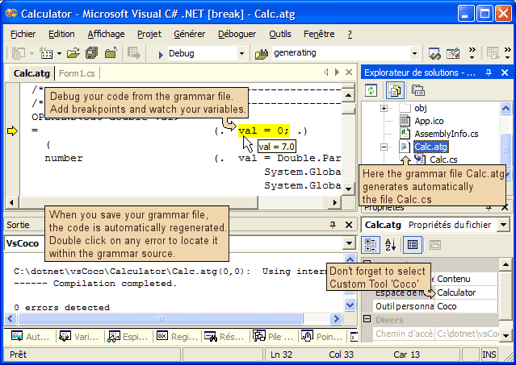

by Pascal GANAYE

I have been publishing one or two article about formula evaluation, and so
far all programs were written manually. For a recent project I need to parse
far more complex grammars and I really needed some help.
I had a look on the internet and I found a project called Coco/R from the Johannes Kepler Universität Linz. This is how they discribe their product : "Coco/R takes a compiler description in the form of an attributed grammar (EBNF syntax with attributes and semantic actions) and translates it into a scanner and a recursive descent parser.... Coco/R has been used successfully in academia and industry. It combines the functionality of the well-known Unix tools Lex and Yacc".
I used Coco for a while and despite being extremely good I found working with it rapidly frustrating because I had to run it manually and it was not really well integrated with Visual Studio.
Anyone wanting to use this tool should be familiar with EBNF grammars. There is several good introduction available on the internet.
I also particularly recommend the reading of the Compiler Generator Coco/R User Manual
You need to download and run the file vsCocoRegistration.exe. The
registration should work fine with Visual Studio 2003.
If it doesn't work with your version, please post in the forum below. If you are able to fix the vsCoCoRegistration please the updated source.
To start with you can try to play with the Calculator sample I provided in the download.
The calculator calculates formula like 12+34*55/2 .
The sample contains only 5 lines of csharp code.
private void button1_Click(object sender, System.EventArgs e)
{
Parser p = new Parser(comboBox1.Text);
p.Parse();
textBox1.AppendText(">" + comboBox1.Text + "\r\n"
+ p.result.ToString() + "\r\n");
}
As you can see most of the login must be in the Parser Object.
The parser is created automatically from this grammar:
COMPILER calc
public double result = 0;
IGNORECASE
// The $L option let you compile directly within your grammar
// You can comment and uncomment the line to fit your development requirements.
$L
/*--------------------------------------------------------------------------*/
/*--------------------------------------------------------------------------*/
CHARACTERS
digit = "0123456789".
cr = '\r'.
lf = '\n'.
tab = '\t'.
TOKENS
number = digit {digit} ['.' {digit}].
// We don't use comments here but this is only a sample
COMMENTS FROM "//" TO cr lf
IGNORE cr + lf + tab
PRODUCTIONS
/*------------------------------------------------------------------------------*/
/*------------------------------------------------------------------------------*/
OPERAND
= (. val = 0; .)
(
number (. val = Double.Parse(t.val,
System.Globalization.NumberStyles.Float,
System.Globalization.CultureInfo.InvariantCulture);
.)
| "(" EXPR ")"
).
// Priorities in FGL
//
// () (Parenthesis)
// 10 - (Unary neg)
// 09 * / (Multiply and Divide)
// 07 + - (Add and Substract)
/*--------------------------------------------------------------------------*/
/*--------------------------------------------------------------------------*/
EXPR10
= (. bool neg=false; .)
{
( '-' (. neg=!neg; .)
| '+' (. /*nothing to do*/ .)
)
}
OPERAND (. if (neg) val*=-1; .)
.
/*--------------------------------------------------------------------------*/
/*--------------------------------------------------------------------------*/
EXPR09
=
EXPR10
{ (. double val2; .)
( '*'
EXPR10 (. val*=val2; .)
| '/'
EXPR10 (. val/=val2; .)
)
}
.
/*--------------------------------------------------------------------------*/
/*--------------------------------------------------------------------------*/
EXPR
=
EXPR09
{ (. double val2; .)
( '+'
EXPR09 (. val+=val2; .)
| '-'
EXPR09 (. val-=val2; .)
)
}
.
/*--------------------------------------------------------------------------*/
/*--------------------------------------------------------------------------*/
calc
=
EXPR.
END calc.
This grammar is fairly standard one.
If I try to read it in English it would say:
As you can see there is more complexity than it looks.
This is a bit hard for me to describe what this grammar does and how it works and this is not my goal.
What I would like to share with you is this tool and hopefully raise an interest for Compiler's compilers if you are new in this subject.
I made several major modifications to Coco/R
First I wanted to trace within the grammar.
This was the easy part, I modified Coco source file and added the $L option.
If you insert $L in the beginning of your grammar, Coco compiler wil add many #line in your code.
For example:
COMPILER calc public double result = 0; IGNORECASE // The $L option let you compile directly within your grammar // You can comment and uncomment the line to fit your development requirements. $L...
OPERAND= (. val = 0; .) ( number (. val = Double.Parse(t.val, System.Globalization.NumberStyles.Float, System.Globalization.CultureInfo.InvariantCulture); .) | "(" EXPR ")" ).
Will generate:
void OPERAND(
#line 31 "C:\dotnet\vsCoco\Calculator\Calc.atg"
out double val
#line hidden
) {
#line 32 "C:\dotnet\vsCoco\Calculator\Calc.atg"
val = 0;
#line hidden
if (la.kind == 1) {
Get();
#line 34 "C:\dotnet\vsCoco\Calculator\Calc.atg"
val = Double.Parse(t.val,
System.Globalization.NumberStyles.Float,
System.Globalization.CultureInfo.InvariantCulture);
#line hidden
} else if (la.kind == 2) {
Get();
EXPR(
#line 38 "C:\dotnet\vsCoco\Calculator\Calc.atg"
out val
#line hidden
);
Expect(3);
} else SynErr(9);
}
This #line are very helpful, the Visual Studio IDE understand
it well and let you debug your generated program using the original source grammar.
I find it very useful; you can comment and uncomment the $L line to fit your development requirements .
My second goal was to run Coco directly from Visual Studio as a custom tool, rather than having to use batch files.
The main advantage of a custom tool is that it will be automatically called when the source grammar changes and not at each compile.
Visual studio publishes an interface called IVsSingleFileGenerator.
This interface defines two methods:
int DefaultExtension(out string)int Generate(string, string, string, System.IntPtr[], out uint, Microsoft.VisualStudio.Shell.Interop.IVsGeneratorProgress)Providing this two interface is the base of the work needed to make a visual Studio Custom tool.
With the good information, this is after all fairly straight forward. I used and modified the GotDotNet User Sample: BaseCodeGeneratorWithSite.
Now that we have a dll which can be a Visual Studio plugin, you need to register it. This could prove a lot harder than expected. Fortunately I read a excellent article called Automated Registration of Visual Studio Custom Tools by Michael McKechney.
I butchered his sample program and produced vsCocoRegistration.exe.
vsCocoRegistration does not yet works with all version of Visual Studio.net. This is just a question of changing the Registry GUIDs but I don't have that many version to test it with. So feel free to ask in the forum below.
The Compiler Generator Coco/R by Hanspeter Mössenböck, Albrecht Wöß, Markus Löberbauer, University of Linz
LL parser From Wikipedia, the free encyclopedia.
GotDotNet User Sample: BaseCodeGeneratorWithSite
Automated Registration of Visual Studio Custom Tools article from by Michael McKechney.
October 29th 2005 - First release.